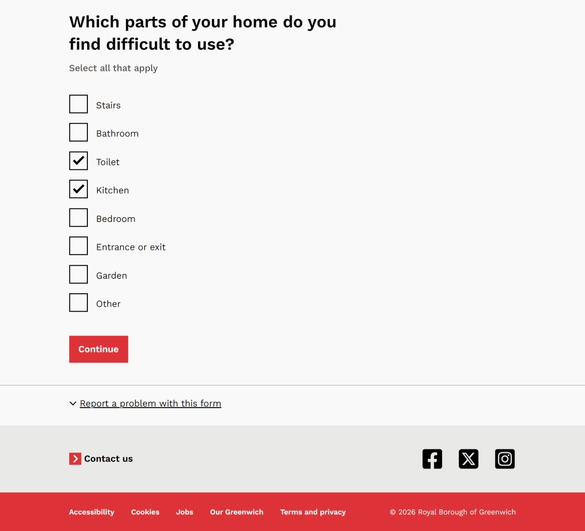

The project in brief
A medical-priority housing assessment needs information about health, the home, professional support, household circumstances and evidence. I reorganised the journey around the resident’s experience of those things, rather than simply reproducing the organisation’s categories.
My work covered question design, conditional logic, repeatable records and preparation pages. The evidence on this page shows those design decisions and artefacts; service outcomes remain to be measured.
The design challenge
A large free-text request to describe a medical condition leaves the resident to decide what matters and how much detail is enough. A long list of property characteristics creates a similar problem if the relationship to health is unclear.
The design needed to help a person explain a difficult situation while giving an assessor useful, structured information. Each question therefore had to justify both the effort of answering it and the downstream work of interpreting it.
Reframing the information architecture
I organised the substantive assessment around this sequence. Administrative questions still have a place, but they do not determine the architecture simply because the organisation is accustomed to collecting them first.
- About your healthEstablish the reason for the assessment
- About your propertyConnect health to the way the home works
- Healthcare professionalsAsk about relevant professional support
- Your householdUnderstand the wider circumstances
- BenefitsCollect the relevant financial context
- Supporting evidenceExplain what supports the assessment
- Review and submitCheck the information before submission
Four decisions behind the redesign
1. Break the health story into smaller, conditional questions
I decomposed broad narrative questions into the condition, diagnosis status, duration, mobility impact, treatment and relevant appointments. Conditions can be added as repeatable records.
“Waiting for diagnosis” is treated as a legitimate state. The person should not have to claim a formal diagnosis or choose an inaccurate answer to explain a real health need. This is a design of the information model as well as its wording.
2. Ask how the home affects daily life
The property section focuses on functional impact: floor and lift access, the parts of the home that are difficult to use, whether housing makes the condition worse and relevant accidents or injuries.
That connects a property characteristic to the purpose of the assessment. A field is retained because it helps explain the relationship between health and home, rather than because it has historically appeared in a form.

3. Reveal professional details when they become relevant
GP, consultant or specialist, and other-professional details use conditional and repeatable patterns. A resident can add a record when it is needed instead of facing a large duplicated block.
This supports the resident entering the information and the assessor who receives it. Structured records can be interpreted as records, rather than extracted from one undifferentiated narrative.
4. Prepare people for evidence and support recovery
I made document requirements contextual to the circumstances already established. Preparation pages explain what the service needs the documents to demonstrate before asking the resident to find or upload them.
The design also considers what happens when someone does not have everything immediately. An evidence requirement needs a recoverable service route, not just an error at an upload field.
Why some extra screens are useful
I used short transition pages before higher-effort sections: health, getting around the home, professionals and supporting documents. Each establishes context, explains what is coming and helps the person prepare.
Relevance → expectation → preparation → disclosure or action.
The extra screen has a cost, so it needs a purpose. The hypothesis is that preparation can reduce uncertainty and backtracking. That remains something to test; the presence of a preparation page does not, by itself, demonstrate better completion.
What the evidence supports
Design and service architecture
A resident-centred sequence, smaller health questions, functional-impact questions, conditional professional records and contextual evidence.
Measured service outcomes
The supplied material does not include a completion comparison, a resident-testing sample or an assessor-processing study.
These are design choices informed by the assessment problem. Intended effects such as easier answers, fewer dead ends and more consistent interpretation should be treated as hypotheses until tested.
What I would test next
I would ask residents to explain their health and housing situation through the journey, then inspect where they need clarification, repeat information, backtrack or cannot provide evidence. I would also work with assessors to check whether the resulting information supports the assessment.
The quantitative checks would include section-level completion, validation errors, evidence-upload failures and incomplete submissions. Testing should also examine whether preparation pages help people using assistive technology or experiencing high cognitive effort.
Reflection and evidence notes
Sequence is part of content design. Establishing relevance and preparing someone for a difficult question can matter as much as the wording of the question itself.
This case study is based on the supplied Medical Priority Assessment Notion page and its form artefacts. It documents the redesign; the source does not confirm rollout or quantified impact. No claim about eligibility decisions or housing outcomes is made.